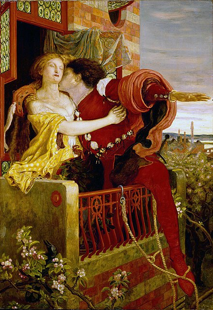
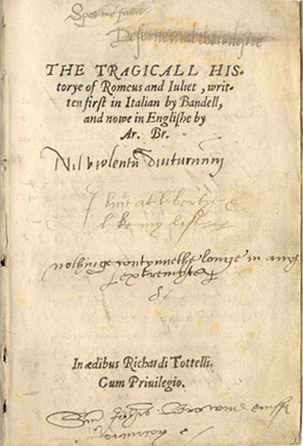
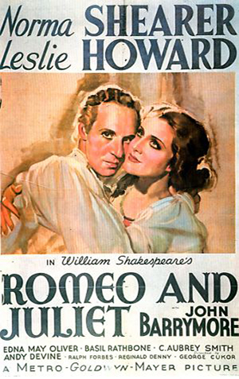
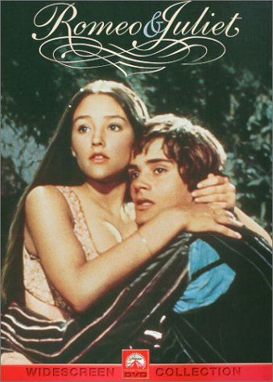
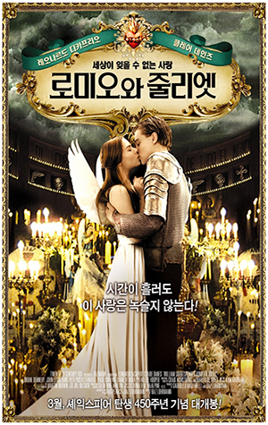
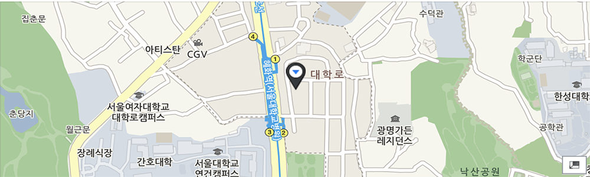

이처럼 격렬한 기쁨은 격렬한 종말을 맞게 될지니
그리하여 승리는 이내 스러지리라, 불과 화약이
입맞추듯 타오르기에. 그토록 달콤한 꿀이
황홀한 그 맛 속에 삽미(澁味)를 품고 있으니
그를 취함이 음식에 대한 욕망을 해칠 수 있음이라.
바라건대 온건히 사랑하라. 긴 사랑은 그러하노니.
사속(斯速)함은 노건(駑蹇)과 다를 바 없이 더디게 닿는도다.
- 로렌스 수사, 2막 6장

로미오와 줄리엣(Romeo and Juliet)은 윌리엄 셰익스피어의 초기 희극이다.
서로 원수인 가문에서 태어난 로미오와 줄리엣이 사랑을 하게 되고 그들의 비극적인 죽음이
가문을 화해하게 만드는 이야기이다. 아름다운 대사와 극적 효과로 많은 칭송을 받는
셰익스피어의 대표작 가운데 하나이다.셰익스피어 당대에서부터 햄릿과 함께 가장 많이
공연되었으며 지금도 여전히 공연되고 있다. 두 주인공은 젊은 연인의 전형으로 자리잡았다.
로미오와 줄리엣의 이야기
길거리에서 몬테규가와 카풀렛가의 싸움이 일어나면서 연극이 시작된다. 베로나의 왕자 에스카루스는 머슴들까지도 만나면 싸울 정도로 심각한 두 가문의 다툼을 중재하면서 다시는 이러한 충돌이 없어야 할 것이라고 경고한다. 에스카루스를 따라온 패리스는 카풀렛 가의 열세살 난 딸 줄리엣과 결혼하기를 희망한다. 카풀렛은 줄리엣의 나이가 어린 점 때문에 제안을 받아들이는 게 조심스럽지만 줄리엣의 의향을 보기위해 그를 밤에 초대하기로 한다. 줄리엣의 어머니인 카풀렛 부인은 패리스와 자신의 딸의 결혼에 찬성하여 줄리엣에게 패리스를 만나볼 것을 권유한다. 한편, 로미오는 사랑하는 로잘린을 볼 수 없어 의기 소침해 있다. 로미오의 친구 벤볼리오는 머큐시오와 함께 오늘 밤 카풀렛 가의 파티에 로잘린이 올 지 모르니 가보자고 권한다. 로미오는 그들을 쫓아 카풀렛가에 몰래 숨어들었다가 발코니에 있는 줄리엣을 보고 첫눈에 반하고 만다. 로미오의 열렬한 구애로 줄리엣은 로미오의 사랑을 받아들인다. 서로 원수의 가문인 두 사람은 로마 가톨릭 교회 수도자인 로렌스 수사에게 도움을 청해 결혼하기로 약속하고 헤어진다.다음날 길거리에서는 다시 두 가문 사이에 싸움이 일어나 카풀렛가의 티발트는 로미오의 친구 머큐시오를 죽이고 만다. 이에 격분한 로미오는 줄리엣의 사촌인 티발트를 죽인다. 이 일로 로미오는 추방되고 줄리엣은 패리스와의 결혼을 강요받는다.줄리엣은 사랑을 위해 로렌스 수사에게 도움을 청하고 로렌스 수사는 마시면 죽은 것처럼 보이는 약을 만들어 줄리엣에게 건네준다. 로렌스 수사는 이러한 사정을 편지로 써 로미오에게 전달하려 한다. 그러나, 로미오는 줄리엣이 죽었단 소리를 듣자 마자 베로나로 돌아오고 로렌스 수사의 편지는 로미오가 추방당한 도시에 전염병이 퍼져서 출입이 통제되는 바람에 전달되지 못한다. 로미오는 줄리엣의 무덤 앞에서 패리스와 결투를 벌여 그를 죽인 후 누워 있는 줄리엣을 보게 된다.슬픔에 빠진 로미오는 독약을 먹고 자살한다. 줄리엣은 깨어나고 그 옆에 죽은 로미오를 보고 경악한다. 로미오의 시체를 안고 오열하던 줄리엣은 로미오의 단도로 가슴을 찔러 죽고 만다. 두 가문은 자신의 사랑하는 자식들이 가문간의 싸움 때문에 죽게 된 사실을 알게 되고 둘의 장례를 치르며 화해한다.
원작의 이야기
셰익스피어의 로미오와 줄리엣은 아서 브룩의 서사시 로미오와 줄리엣의 비극을 바탕으로 한 것이다. 아서 브룩의 서사시는 1562년 출간되었다. 셰익스피어는 아서 브룩의 서사시에서 줄거리를 가져왔다.[1] 그러나 여러 등장 인물과 세부적인 이야기들은 셰익스피어의 독창적인 창작이다. 1567년 윌리엄 페인터는 이탈리아를 배경으로 한 여러가지 이야기를 묶어 《환희의 궁전》이란 제목으로 출간하였으며 여기에 로미오와 줄리엣의 이야기가 〈로미오와 줄리엣의 지고지순한 사랑〉이라는 제목으로 삽입되었다. 페인터가 출간한 로미오와 줄리엣의 이야기는 당시 라틴어로 쓰인 이탈리아 소설의 전통에 따라 연극의 막과 같이 장으로 구분되어 이야기가 구성되어 있었으며 셰익스피어 역시 이 구성을 참조하였다.셰익스피어 당대의 런던 극장가에서는 이탈리아 이야기가 선풍적인 인기를 얻고 있었다. 이러한 인기에 힘입어 셰익스피어 역시 끝이 좋으면 다 좋다, 법에는 법으로, 로미오와 줄리엣과 같은 이탈리아를 배경으로 하는 희극을 선보였다. 아서 브룩의 시 역시 이러한 유행에 따라 이탈리아의 작가 마테오 반델로가 1554년 발표한 소설집 속의 〈질레타와 로미오〉를 번역한 것이었다.반델로의 이야기는 셰익스피어의 로미오와 줄리엣이 공연되는 동안 프랑스에서도 번역되어 공연되었다고 하나 전해지지는 않는다. 마테오 반델로의 〈질레타와 로미오〉 역시 그보다 앞서 루이지 다 포르토가 1530년 경 발표한 《새로이 발견한 두 귀족 연인의 이야기》 (이탈리아어: Historia novellamente ritrovata di due nobili amanti)에 수록된 〈질레다와 로미오〉를 토대로 쓰인 것이다. 근래에 들어 베네치아의 베로나를 무대로 하는 카풀렛과 몬타규 가문의 두 연인에 관한 다양한 판본의 비슷한 이야기가 수집되고 있다. 다 포르도 역시 다양한 이야기를 수집하여 재구성 하였을 것으로 추측되며 이 이야기들은 어느 정도 실화에 바탕을 두고 있을 것으로 추정된다. 13세기경 몬테치 가와 카풀레티 가는 이탈리아의 유력한 귀족 가문 중 하나였다.질레타의 발코니와 무덤은 여전히 베로나의 인기있는 관광 명소이다. 학자들은 그 장소가 실재 무대였는지에 대해서는 회의적이다.로미오와 줄리엣과 비슷한 줄거리를 가진 이야기 중 가장 오래된 것은 마수치오 살레미타노가 1476년 발표한 《서른 세가지 이야기》에 들어있는 시에라의 〈마리토와 지아노차 이야기〉이다.로미오와 줄리엣의 비극적인 사랑 이야기의 기원은 고대에까지 거슬러 올라간다. 예를 들어 피라모스와 티스베 이야기는 포르도의 작품에 많은 영향을 준 것으로 평가된다. 이러한 영향은 셰익스피어의 이야기에도 반영되었다. 예를 들면, 부모가 원치 않는 사랑, 여자 주인공이 죽은 것으로 오해한 끝에 자살하는 남자 주인공 등이 그것이다.[8] 브룩은 이탈리아의 이야기를 번역하면서 제프리 초서의 작품인 트로일로스와 크리세이드를 참조하였다. 한편 에페소스의 작가 에베소의 제노폰은 3세기경 연인을 이별하게 만드는 죽은 것처럼 보이는 약이라는 설정이 담겨있는 로미오와 줄리엣의 이야기와 비슷한 희곡인 에베소인 이야기를 썼다. 이러한 설정은 크리스토퍼 말로가 그의 작품 헤로와 레안드로스, 카세지의 여왕 디도 등에서 다시 차용하여 셰익스피어 시대에는 널리 알려진 이야기 구성 방식이었다.
그 이야기들을 둘러싼 비평과 해석
비평의 역사
로미오와 줄리엣은 부분적인 많은 결점이 있음에도 불구하고 셰익스피어 최고의 걸작 가운데 하나로 꼽힌다. 비평가 사이에 논점이 되는 것 중 하나는 두 젊은 연인에 대한 해석의 차이다. 이들은 자신들을 둘러싼 어찌할 수 없는 비운에 필사적으로 대항하다 파멸한 것인가? 아니면, 맹목적인 정열에 휩싸여 비극적인 결말로 치달은 것인가? 여러 가지 해석이 분분하나 학자들의 관점 차이에 의한 이견때문에 결론을 내리지 못하고 있다. 1662년 초기 연극 비평가 새뮤얼 피프스는 "내가 본 것 중 최악의 연극"이라 혹평하였다.10년 후 존 드라이든은 등장인물 머큐시오에 대해 "머큐시오야 말로 셰익스피어의 기교의 정점이며 셰익스피어 자신이다. 3막에서 머큐시오를 죽임으로서 그는 자신을 죽였다"라고 평가하였다. 로미오와 줄리엣에 대한 비평은 18세기에도 드문 드문 이루어졌으며 찰스 길든과 헨리 흄 사이에 등장인물의 성격 결함에 관한 논쟁이 있기도 하였다. 19세기에는 데이비드 게릭이 로미오의 자포자기와 줄리엣의 무모한 사랑에 초점을 맞추었고, 20세기에 이르러 리처드 그린 몰턴은 등장인물의 행동의 원인이 성격적 결함이 아닌 우연한 사건의 중첩에서 비롯된 것이라는 해석을 내세우기도 하였다.
극의 구성
셰익스피어는 로미오와 줄리엣 극의 구조를 희비극으로 구성한다. 제3막에서 머큐시오가 죽기 전까지 연극은 희극으로 진행된다. 머큐시오의 죽음과 함께 극은 갑작스럽게 전환되며 비극적인 분위기로 가득차게 된다. 극의 분위기는 점점 무거워지고 로미오가 죽은 듯 누워있는 줄리엣을 대하는 순간 극은 절정에 달하고 "숨막힐 듯한 불안감"이 엄습한다. 셰익스피어가 장치한 복선으로 인해 관객들은 로미오가 만약 페리오에 머물렀더라면 이 모든 사실을 알 수 있었을 것이란 점을 알고 있고 이는 절정의 불안감을 상승시킨다. 이후 이 두 연인은 끝내 파멸하고 극은 급속히 결말로 내닫는다.
문체
셰익스피어는 로미오와 줄리엣에서 다양한 운문의 형식을 사용한다. 로미오가 줄리엣과 대화를 나눌 때는 소네트의 형식을 띠며, 코러스는 무운시의 형식으로 그리고 다른 여러 장면에서는 5보격 시의 형식이 사용된다.
| 베로나 가 | 카풀렛 가 | 카풀렛 가의 시종 | 몬타규 가 | 몬타규 가의 시종 |
|---|---|---|---|---|
| 에스카루스 왕자: 베로나의 왕자 | 카풀렛 경: 카풀렛 가의 가장 | 유모: 줄리엣의 유모, 카풀렛 가의 하녀 | 몬타규 경: 몬타규 가의 가장 | 아브람: 몬타규 가의 하인 |
| 카운트 패리스: 왕자의 친척 | 카풀렛 부인: 카풀렛 경의 부인, 줄리엣이 패리스와 결혼하기를 희망한다. | 피터: 유모를 보좌하는 하인 | 몬타규 부인: 몬타규 경의 부인 | 발사자: 로미오의 시종 |
| 머큐시오: 왕자의 또 다른 친척, 로미오의 친구 | 줄리엣: 카풀렛 부부의 딸, 여주인공 | 그레고리와 샘슨: 카풀렛 가의 하인 | 로미오: 몬타규 부부의 아들, 남주인공 | |
| 티발트: 카풀렛 경의 조카, 줄리엣의 사촌 | 벤볼리오: 로미오의 사촌이자 친구 |
영화로 나타난 로미오와 줄리엣
  
1936년 흑백영화인 미국영화
로미오와 줄리엣
트로미오와 줄리엣
로미오와 줄리엣 (1968년 영화)
로미오와 줄리엣 (1996년 영화)
1968년 영국,이탈리아 합작영화로 이탈리아 감독인 프랑코 제피렐리(1923~2019)가 감독하고 레너드 위팅(개봉 당시 표기는 레나드 화이팅)과 올리비아 핫세가 나온 영화. 로미오와 줄리엣하면 이 영화가 떠오를 정도로 유명했다. 85만 달러로 만들어 3890만 달러 대박을 벌어들였다. 하지만 두 주연은 너무나도 이 영화로 뜨다보니 이후 별 성공작이 없다. 대부, 태양은 가득히, 해바라기 같은 영화 음악으로 유명한 니노 로타(1911~1979)가 맡은 음악도 유명하다. 캐퓰릿 가의 축제에서 가수가 부르는 노래는 What is a youth / A time for us라는 제목으로 알려져 있기도 하다.
트로마 영화사가 만든 호러판 버젼! 트로마 사장인 로이드 카우프만과 바로 제임스 건이 공동감독(다만 감독 이름으론 카우프만만 내세웠다!), 각본을 맡았으며 카우프만도 역시 카메오로 나온다. 1999년 한국에서도 잠깐 개봉했다.
영화의 티저
영화의 명장면
로미오와 줄리엣 1968년도 작품 중 "What is a youth"의 장면
뮤지컬로 나타난 로미오와 줄리엣
프랑스 뮤지컬의 대중화를 선도한 작품
빅토르 위고의 원작을 아름다운 멜로디와 격렬한 안무 등으로 담아낸 뮤지컬 [노트르담 드 파리]의 성공 이후 프랑스에서는 고전을 바탕으로 뮤지컬 제작에 대한 관심이 높아졌다.
영화음악과 유명 가수들의 히트곡을 선보여 왔던 작곡가이자 작사가인 제라르 프레스귀르빅 역시 마찬가지였다.
뮤지컬 제작을 염두에 두고 있던 그는 일찍이 프랑스 예술인들을 매료시켜왔고 다양한 무대를 통해 프랑스관객들을 열광시켜온 셰익스피어의 [로미오와 줄리엣]에 주목했다.
증오와 복수의 시대에서 피어난 원작의 애절한 사랑이야기에 현대적 감각의 새로운 해석을 더해 선보인 뮤지컬 [로미오 앤 줄리엣]에 대한 사람들의 반응은 기대 이상이었다.
비록 뮤지컬은 처음이지만 대중의 취향을 꿰뚫고 있는 제라르 프레스귀르빅이 선보인 음악의 힘이 컸다.
공연에 앞서 선보인 싱글곡 ‘사랑한다는 것(Aimer)’과 뮤직비디오 ‘세상의 왕들(Les Rois du monde)’ 등은 뮤지컬 음악으로는 이례적으로 2001년 프랑스
음악차트 1위에 오르며 200만장 이상의 메가 히트를 기록했고 덕분에 공연은 시작하기도 전에 이미 초반 3개월 치 티켓이 모두 매진되는 결과를 낳았다.
무용가 출신 레다의 연출과 안무로 무대에 오른 [로미오 앤 줄리엣]의 위력 또한 대단했다.
가수와 무용수의 역할을 명확하게 구분 짓는 기존의 프랑스 뮤지컬들과는 다르게 [로미오 앤 줄리엣]은 노래를 부르는 주인공은 춤을 추게 하고 무용수들은 코러스에
참여시키며 두 분야의 경계를 허물었다. 노래 곳곳에 주요 인물들의 대사를 배치해 극적 긴장감을 고조시킨다는 점도 이 작품만의 특징이다.
록, 발라드, 프렌치 샹송 등 여러 장르를 넘나들며 관객들의 귀를 사로잡는 감각적인 음악과, 탄탄한 원작의 스토리를 따르면서도 새롭게 구성된 로맨틱한 가사,
17세기 유럽 귀족사회를 그대로 재현한 듯 화려한 무대 세트와 파란색과 빨강색으로 선명하게 대비되는 조명과 의상, 격정적이면서도 섬세한 안무 등이 조화를
이룬 공연은 관객뿐만 아니라 관계자들로부터도 ‘역사상 최고의 뮤지컬’이라는 찬사를 받았다.
원작의 나이와 비슷한 두 주인공 로미오 역의 다미앙 사르그(19세)과 줄리엣 역의 세실리아 카라(16세)의 캐스팅으로 젊은 연인뿐 아니라
청소년들까지 객석으로 불러들인 [로미오 앤 줄리엣]은 첫 공연 이후 예정된 공연의 전 좌석을 모두 매진시키며 폭발적인 인기를 얻었고 이후
프랑스에서의 창작뮤지컬 대중화에 기폭제 역할을 했다. 자국 내에서뿐만 아니다. 프랑스를 비롯한 유럽에서 빅히트를 기록한 [로미오 앤 줄리엣]은
이후 캐나다, 벨기에, 영국, 헝가리, 이탈리아 등 전 세계 16개국에서 400만 명 이상의 관객을 매료시키며 프랑스 뮤지컬의 인지도를 높이는 데에 한몫했다.
현대적인 고민을 더한 원작의 캐릭터들
뮤지컬 [로미오 앤 줄리엣]은 셰익스피어 원작의 내용을 충실히 따라가는 한편으로,
각각의 캐릭터들에 구체적인 동기를 부여하고 현대적인 고민을 더했다.
원작 이후로 언제나 경박하고 주책없는 중년 여성에 불과했던 줄리엣의 유모는 ‘그녀가 사랑에 빠졌네(Et voila qu'elle aime)’를
통해 뜨거운 모성을 표현하면서 진지한 감정을 드러낸다. 이후로도 그녀는 로렌스 신부와 함께 ‘절망의 듀엣(Duo Du Despoir)’과
‘더 이상 모르겠습니다(J' Sais Plus)’를 통해 절망적인 극의 분위기를 고조시킨다. 원작의 폭력적이고 권위적이기만 했던 줄리엣의
아버지 캐플렛 백작은 뮤지컬에서도 역시 독단적으로 나이 많은 재력가 패리스 백작과의 혼사를 진행시키지만, ‘딸이 있다는 건(Avoir Une Fille)’을
통해 자신이 얼마나 딸을 사랑하는지를 고백함으로써 현대인들이 공감할 수 있는 아버지의 마음을 보여준다.
머큐시오와 티볼트의 죽음을 논리적으로 설명하던 벤볼리오는 그들의 죽음과 로미오의 추방에 절망하고,
‘어떻게 말하지(Comment lui dire)’를 통해 줄리엣의 죽음에 절규한다. 로미오에게 연인의 사망 소식을 전하는 것도 역시 벤볼리오다.
한편 티볼트나 로렌스 신부는 원작에서보다 캐릭터가 강화됐다. 사촌동생 줄리엣에 대한 사랑을 가슴에 품고 있는 티볼트는 패리스 백작과 로미오에 대한 질투를 숨기지 않으며,
‘내 잘못이 아니야(C'est pas ma faute)’를 통해 몬테규 가에 대한 자신의 증오심이 우울했던 어린 시절에서 비롯된 것임을 토로한다.
로미오와 줄리엣의 결혼을 통해 두 가문의 화해를 시도했던 로렌스 신부는 두 사람의 죽음 앞에서 신에 대한 믿음을 의심한다.
무의미하게 서로를 증오해야 하는 자신들의 운명을 슬퍼하고(‘증오(La haine)’), 자식의 죽음 앞에서 앞으로 서로에 대한 증오가 없을 거라 말하는(‘죄인들(Coupables)’)
캐플렛 부인과 몬테규 부인 역시 원작보다 캐릭터가 강화됐다.
비극적 운명을 강조하는 죽음의 여신
등장인물의 독창적이고 차별화된 해석과 더불어 뮤지컬 [로미오 앤 줄리엣]은 원작에 없는 ‘죽음의 여신’이라는 새로운 캐릭터를 등장시켜 주인공들의 비극적 운명을 강조한다. 흰 옷을 입은 죽음의 여신은 첫 장면인 ‘베로나(V'erone)’에서부터 거의 모든 장면에 등장해 캐플렛 가와 몬테규 가의 불화와 충돌, 인물들 사이에 벌어지는 비극적 사건과 죽음에 이르는 전 과정을 지배한다. 등장인물들의 눈에는 보이지 않는 그녀는 눈빛과 몸의 언어, 춤사위로 인물들의 죽음을 예언한다. 그녀가 접촉하고 입김을 불어넣거나 주술을 거는 춤을 추면 누구도 예외 없이 죽음을 맞게 된다. 죽음이 가장 먼저 다가가는 인물은 로미오다. 자신의 주위를 맴도는 죽음의 정체를 알 리 없는 그는 캐플렛 가의 파티에 참석하기 전에 자신에게 다가오는 운명을 예감한 듯 알 수 없는 불안감에 휩싸이고 인생의 덧없음을 노래한다. 하지만 죽음의 여신이 본격적으로 (죽음으로서의) 자신의 역할을 수행하는 것은 티볼트와 머큐시오의 결투가 벌어지는 2막 첫 장면에서부터다. 그녀는 머큐시오와 티볼트에 차례로 다가가 죽음의 숨결을 불어넣고, 추방당한 로미오에게 전하는 로렌스 신부의 편지를 가로채 주인공들을 파국으로 몰고 간다. 벤볼리오로부터 줄리엣의 죽음 소식을 전해들은 로미오가 무대를 빠져나간 후에 펼쳐지는 죽음의 여신의 독무는 무척 매력적인데, 소매 속에 감췄던 편지를 찢는 마지막 장면에서는 안타까운 탄성이 절로 난다. 사랑하는 연인이 죽은 줄 알고 오열하던 로미오는 독약을 마시는 대신 죽음의 여신과의 입맞춤 후에 숨을 거두고, 잠에서 깨어난 줄리엣 역시 그녀가 건넨 칼에 의해 목숨을 잃는다.
공연 내역
2001년 1월 19일 파리 팔레 대 콩그레 초연
최초 수상 내역
2001년 ‘Aimer(사랑한다는 것)’,
‘Les Rois du Monde(세상의 왕들)’ 프랑스 음악차트 1위
골든 디스크, 백금 디스크, 다이아몬드 디스크 수상
2005년 오스트리아 비엔나 ‘베스트 뮤지컬’ 선정
창작자
극작, 작사, 작곡, 제작 : 제라르 프레스귀르빅(Gerard Presgurvic)
‘Patrick bruel’, ‘Florent Pagny’, ‘Liane Foly’ 등 프랑스 유명 대중가수들의 앨범을 제작해온 작사가이자 작곡가.
2001년 <로미오 앤 줄리엣>으로 뮤지컬에 데뷔했으며, 2003년에는 마가렛 미첼 원작의 뮤지컬 <바람과 함께 사라지다>를 선보였다.
연출, 안무 : 레다(Redha)
1981년에 처음으로 자신의 무용단을 만들고 TV 경력을 쌓기 시작한 그는 남미, 아프리카, 프랑스에서 주로 공연을 선보였다.
여러 오페라에 안무 연출로 참여했으며, 1998년 프랑스 월드컵 개막식의 안무와 연출 공동 작업을 선보여 주목을 받았다.
뮤지컬 <로미오 앤 줄리엣>에서 노래와 춤의 경계를 허무는 혁신적인 연출과 개성 넘치는 안무로 유명해졌다.
시놉시스
아름다운 도시 베로나. 하지만 몬테규와 캐플렛 두 원수 집안의 갈등으로 베로나는 어수선하다. 영주는 이 싸움으로 인한 치명적 결과에 대해 경고하지만 별로 소용이 없다. 카플렛은 자신의 딸을 영주의 조카 파리스 백작에게 시집보내려 하고, 이를 위해 무도회를 준비한다. 로미오와 벤볼리오, 머큐시오는 초대받지 않은 캐플렛 가 무도회에 참석하고 이곳에서 로미오와 줄리엣은 첫 눈에 반하게 된다. 로미오는 로렌스 신부를 찾아가 줄리엣과 결혼시켜줄 것을 간청하고, 이를 통해 두 가문이 화해할 거라 기대한 신부는 두 사람의 비밀 결혼식을 진행한다. 한편, 로미오와 줄리엣의 사랑에 대한 소문을 들은 줄리엣의 사촌 티볼트는 질투에 휩싸여 로미오에게 결투를 신청하고, 이 과정에서 머큐시오가 티볼트의 칼에 죽게 된다. 죄책감과 분노를 이기지 못한 로미오는 결국 그 자리에서 칼을 뽑아 티볼트를 죽이고, 줄리엣과 첫날밤이자 마지막 밤을 함께 보낸 후 만투아로 추방당한다. 파리스 백작과의 결혼 소식을 듣게 된 줄리엣은 로렌스 신부를 찾아가 도움을 청한다. 신부는 줄리엣에게 자는 동안 몸이 싸늘해지는 가짜 독약은 건네고, 로미오에게는 이 사실을 알리는 서신을 보낸다. 하지만 운명의 장난으로 서신을 받지 못한 로미오는 벤볼리오에게 줄리엣의 죽음에 대한 소식을 먼저 듣게 된다. 베로나에 도착해 그녀의 죽음을 확인한 로미오는 준비해 간 독약을 마시고 그녀의 뒤를 따르고, 잠에서 깨어난 줄리엣은 로미오의 죽음을 비통해 하다가 그의 칼을 꺼내 자결한다. 두 연인의 시체를 발견한 로렌스 신부는 신을 원망하고, 몬테규와 캐플렛 집안은 자신들의 죄를 뉘우치며 둘을 함께 묻어주기로 한다.
로미오와 줄리엣 법?
로미오와 줄리엣 법(Romeo and Juliet law)은 두 미성년자간이 사귀고 있는데 서로 성관계 동의 가능 연령에서 나뉘게 되었을 경우
(대한민국으로 치자면 중1과 초6 혹은 중2와 생일 안지난 중1 정도), 상호 동의 하에 친근감에 기반하여 성적 행위를 하는 것을 허용하는 법이다.
이 법은 지역마다 차이가 있어서, 일례로 텍사스의 경우를 보면 대상이 최소 15세 이상이고 자신이 17세 이상이며
나이차가 4살 미만일 경우 성관계를 해도 처벌하지 않는다. 그러나 그 이외의 경우, 즉 나이차가 4살 이상으로 벌어지는 경우라면 처벌이 된다.
(법적 의제강간 나이 이하의 학생끼리의 성관계는 어떻게 처리되는지 추가 바람, 물론 아무리 조건에 맞더라도 한 쪽이 강압적으로 했다면 당연히
성폭행으로 법적으로 저촉된다.
사실 이런 법이 만들어진 이유는 이런 사건처럼 성인이 강압적으로 미성년자(특히 중학생 정도)에게 성관계를 하는 걸 막아서 성적 가치관을
올바르게 갖추게 만드는 것은 물론, 그렇다고 너무 엄격하게 적용하다보면 단 3~4살 차이로 나이 많이 먹은 미성년자 혹은 갓 성인이 된
사람이 처벌되는 가능성이 충분히 있기에 이런 억울한 경우를 막기 위해 만든 법이 바로 이것이다.
많은 국가에서 형법상 처벌 가능한 연령 이상(한국에서는 만 14세 이상)인 사람과 성관계 동의 가능 연령 미만(한국에서는 만 13세 미만)인 사람의
성관계를 범죄로 보고 있다. 성관계 동의 가능 연령은 나라마다 다양하다. 여담으로 실제로 미국에서 청소년 여성 둘이 레즈비언 관계를 맺고 있었는데,
한 명이 형법상 성인이 되자 마자 부모가 고발해서 잡혀간 사건도 있었다. 그래서 생긴 게 로미오와 줄리엣 법이다.
현재 공연중인 연극

공연시간 정보
목 오후8시 / 토,일 오후3시
할인정보
*예매할인 50%
공연포인트
세계적 명작
쳇바퀴처럼 반복되는 바쁜 일상에 지친 현대인들에게 선사하는 최고의 명작!
로미오와 줄리엣!
영국이 낳은 세계 최고의 극작가 셰익스피어의 불후의 명작!
로미오와 줄리엣을 원작이 갖고 있는 고유성을 지키면서, 박진감 넘치는 현대적인 감각으로 무대 위에 선보인다.
역동적 안무
락 발라드와 팝 뮤지컬의 장르로 구성된 음악에 현대 무용의 움직임과 최신 댄스를 더해 드라마의 극적 효과를 높이고자 한다.
개인 솔로의 밀도 있는 감정전달과 화려한 군무로 관객들에게 가깢게 다가가고자 한다.
화려한 음악과 풍부한 볼거리
고전과 현대가 어우러진 시공간을 초월한 사랑의 감동이 춤과 음악, 역동적인 무술을 통해 관객들의 마음속에 깊이 파고든다.
오늘날 삭막한 삶을 쌀아가는 젊은이들에게 가슴뭉클한 사랑을 전함으로 사회적 문제가 되는 저 출생의 원초적 문제를 해결하고
내 연인 내 가족의 사랑을 돌아 볼 수 있는 시간이 되었으면 한다.
출연진 전체가 장면 별 무술 합과 목검을 활용한 앙상블을 선보인다.
마치 군무를 연상 시키는 무대 동선의 활용과 배우들의 움직임으로 몬테규 가와 캐플릿 가의 피비린내
나는 격정적인 싸움을 무대 위에 표출한다.
| 날짜 | 요일 | 시간 | 로미오 | 줄리엣 | 유모 | 머큐쇼 | 로렌스 | 티볼트 | 피터 |
|---|---|---|---|---|---|---|---|---|---|
| 10월3일 | 목 | 15:00 | 임성목 | 김단아 | 백시안 | 윤석민 | 함서진 | 황수빈 | 전영진 |
| 10월5일 | 토 | 15:00 | 임성목 | 한미래 | 백시안 | 윤석민 | 함서진 | 황수빈 | 전영진 |
| 10월6일 | 일 | 15:00 | 임성목 | 김단아 | 백시안 | 윤석민 | 이석원 | 황수빈 | 김한별 |
| 10월10일 | 목 | 20:00 | 임성목 | 한미래 | 백시안 | 윤석민 | 이석원 | 황수빈 | 전영진 |
| 10월19일 | 토 | 15:00 | 임성목 | 한미래 | 백시안 | 윤석민 | 함서진 | 황수빈 | 김한별 |
| 10월20일 | 일 | 15:00 | 임성목 | 김단아 | 백시안 | 윤석민 | 이석원 | 황수빈 | 김한별 |
| 10월24일 | 목 | 20:00 | 임성목 | 한지연 | 백시안 | 윤석민 | 함서진 | 양현준 | 전영진 |
| 10월26일 | 토 | 15:00 | 임성목 | 김단아 | 백시안 | 윤석민 | 이석원 | 황수빈 | 전영진 |
| 10월27일 | 일 | 15:00 | 임성목 | 한지연 | 백시안 | 윤석민 | 함서진 | 황수빈 | 김한별 |
| 10월31일 | 목 | 20:00 | 임성목 | 한미래 | 백시안 | 윤석민 | 이석원 | 양현준 | 전영진 |
찾아오시는길

느낀점
한번 하다가 오류가 난 적이 있는데 바보같이 하나하나 확인하느라 시간이 걸렸습니다.
오류창을 클릭하면 어디가 오류난지 보여주는 걸 나중에 알았습니다.
하지만 유니티보다 수월하고 제가 만든 태그로 새로운 웹페이지를 만드는게 신기하고 흥미로웠습니다!
수업하기 전에는 내가 과연 해낼 수 있을까 걱정했지만 천천히 따라가보고 실행해보니 완성되는 웹페이지를 보고 성취감도 느꼈습니다!
얼른 css를 더 배워서 제대로 된 페이지를 만들어 보고싶습니다!
기말도 잘 부탁드립니다 교수님!